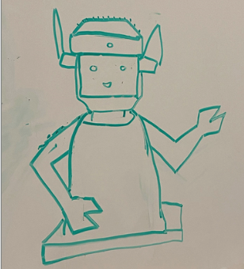
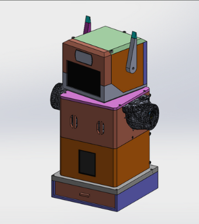
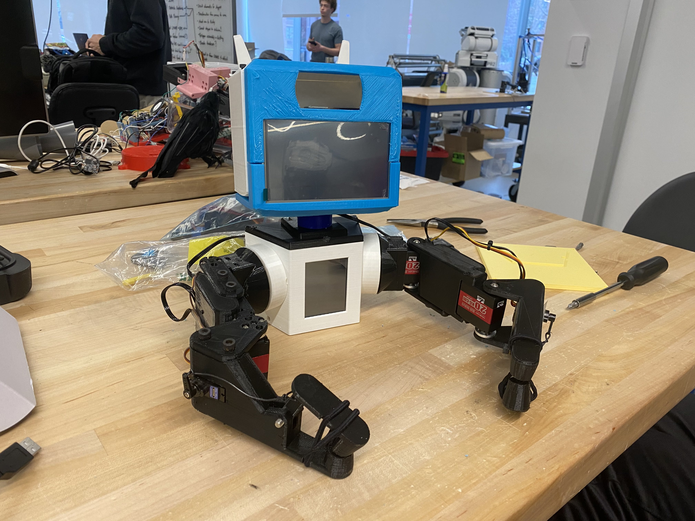
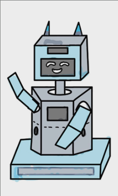
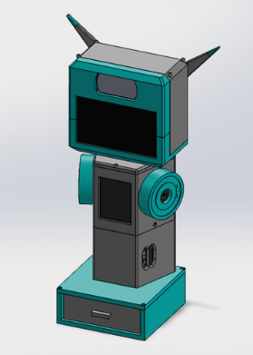
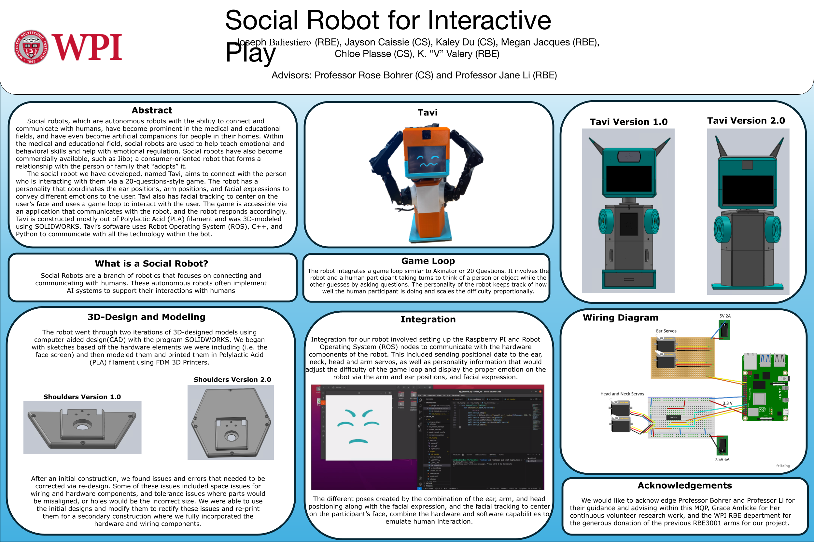

TAVI Social Robot
Senior Capstone Project
----
OVERVIEW
Tavi 1.0 is a social robot intended to play a guessing game with the user with integrated arm movement, facial expressions, facial tracking, and head and ear movements. This was a year long graduation capstone project to demonstrate development, coding and 3D modeling ability, and teamwork.
----
DESIGN PROCESS
To start the design process, my team and I discussed what the goal for our project was. We determined how we wanted the robot to look, what code we wanted it to run, and how we wanted it to interact with the user. After a few logistics meetings, we created our first mockup for how the robot should look.

Following the initial concepts, we ordered the hardware and began the design process around the hardware using SOLIDWORKS.

We printed the first version of Tavi using PLA and constructed the first version of the robot. This allowed us to test the software and see how everything fit, allowing us to update the design to ensure that there was enough room for all components.

Following the initial print, we found that we had updates to make. We needed more space to hold the Raspberry Pi, we needed more space for wiring, and we needed to adjust the body size to offset the weight of the head, and to give the head room to move. We started with an initial sketch concept.

After the reviewed concept, we re-made the Solidworks concept.

Following the final print, we constructed the robot, and handed it over to the software team, who worked to deploy the code onto the robot.
----
HARDWARE
- Raspberry Pi
- Raspberry Pi compatible screen
- USB Camera
- Robotic Arms (provided by WPI Robotics Department)
- Servos
- Breadboards, wiring, power
----
SOFTWARE
- C++
- ROS
- Python
----
CHALLENGES
One of the major challenges was the team balance. The group started with two Robotics majors and four computer science majors. However, halfway through the year, the second robotic major student graduated, leaving me to be the only robotics student on the team. I was responsible for the entire redesign, Solidworks modeling, and construction. Luckily, we had a younger student who volunteered for our project who assisted with the construction for the times that I needed another set of hands. It was a major hurdle as it was a ton of work, especially since the initial concept was designed and modeled with two robotics majors.
The second major challenge was the communication between the software team members, and their communication with the hardware team (me). The software team struggled to communicate their progress and their needs for the project with each other, with the advisor, and with the group as a whole. This left our project lacking in the software areas of the project, meaning our final project did not reflect the deliverables promised. The hardware side, which was my deliverables for the project, was delivered to its full extent and on time. However, the robot did not function as intended, leaving the project at a worse state than predicted. There were a few software elements that were operational, such as the facial tracking, the ears moving, the arm moving, and the face changing, but they did not work simultaneously, and the game integration was not completed in time for the final presentations.
----
GALLERY
